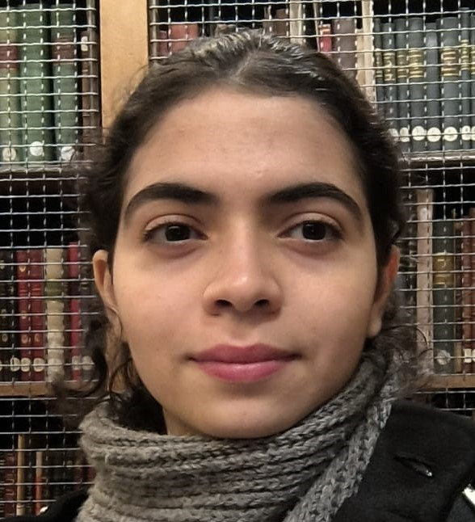
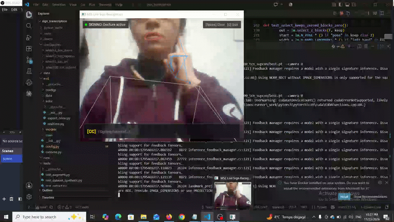

I hold a Bachelor’s in Computer Science and a Master’s in AI. My work bridges strong theoretical foundations with applied engineering, spanning computer vision, generative modeling, and agentic LLM systems.

Real-time camera interface that transcribes sign language into live closed captions.

Extracts 3D keypoints via MediaPipe Holistic and classifies landmark sequences with a Temporal Convolutional Network (TCN) trained using Supervised Contrastive Learning (SupCon).
Uses lightweight generative AI models to reconstruct high-resolution fluid flow fields from coarse simulations. Compares a deterministic U-Net baseline against a probabilistic Conditional VAE (cVAE) to capture turbulent vortices and estimate predictive confidence.